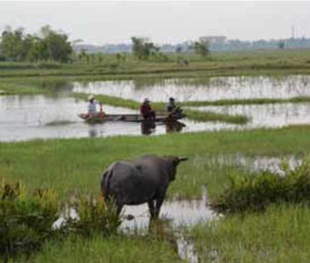
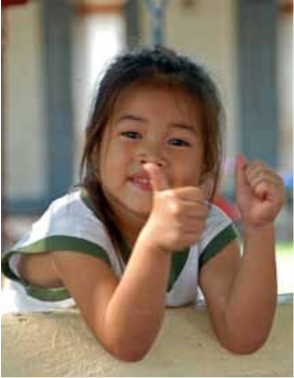
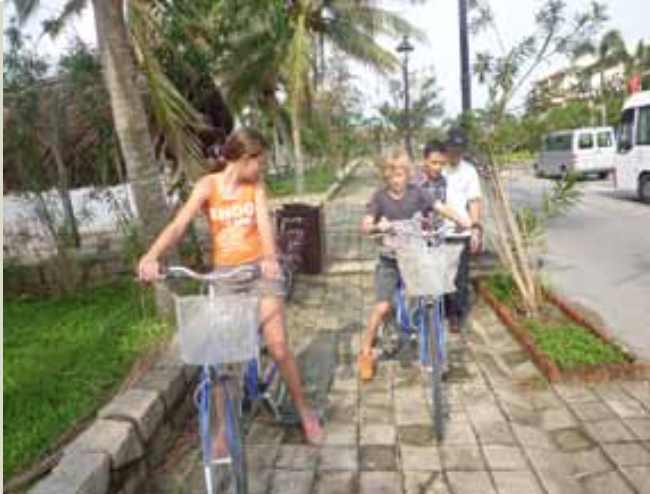
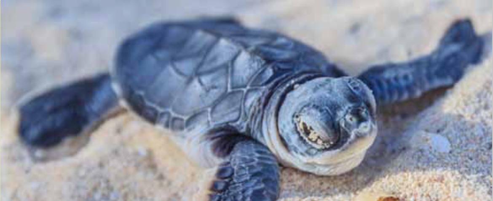
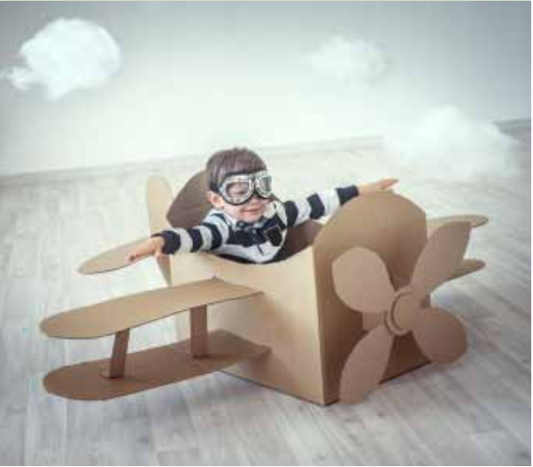
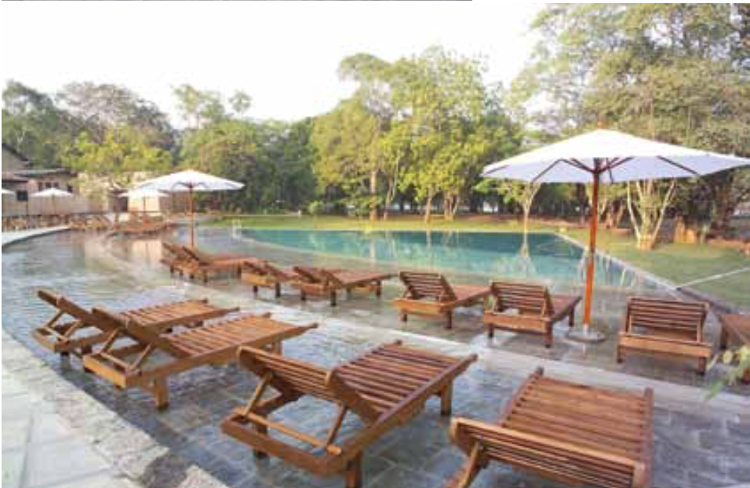

DET SKAL DU VIDE
Vores familierejser er kulturrejser, der er tilrettelagt for både børn og voksne. På vores familierejser rejser i sammen med jeres egen lokale, engelsktalende familieguide.
I tilrettelæggelsen af vores familierejser har vi taget højde for, at både børn og voksne skal opleve den store verden sammen.
Rejserne er opdelt i dage med kulturoplevelser og dage med ren afslapning ved en strand eller på hoteller med et stort aktivitetsudbud.
Rejserne er udviklet af børnefamilier, der ved, hvad der skal til for at gøre en rejse med børn til en succes. På familierejser er der forskellige behov, der skal tilgodeses og vi har derfor gjort en del ud af, at både du og dine børn oplever den fremmede verden i jeres tempo.
Vi rejser til et eksotisk, spændende land, hvor I får et dybere indblik i landets kultur, end man traditionelt gør. Alle kan være med. Og det er altid oplevelserne og underholdningen, der er i centrum. Specielt udvalgte rejseledere sikrer, at aktiviteterne foregår i øjenhøjde med både de voksne og børnene.

PROGRAMMET FOR REJSEN
Familierejserne foregår individuelt for jeres familie, derfor bestem- mer I, hvornår I vil rejse. Priserne er uden y til og fra destinatio- nen, alt andet er inkluderet. Når I nder den rejse, der passer jer kontakter I os mht y - så vil vi søge efter den bedste yforbind- else til jer.
Alle vores familierejser kan tilpasses så de matcher jeres behov og ønsker.

AT REJSE MED SINE BØRN ER EN GAVE
“Jeg har rejst hele mit liv og husker, hvordan mine forældre for mange år siden tog min søster og mig til fjerne og eksotiske rejsemål. Derfor var det helt naturligt, da jeg selv k børn, at de skulle med ud og opleve verden”, siger direktør for Horisont Rejser, Peter Frederiksen, der står bag bureau- ets familierejser.
Vores familierejser henvender sig direkte til familier med børn, og det er bl.a. Peters erfaringer fra rejser med sine egne børn, der ligger til grund for udvælgelsen og sammensætningen af familierejserne.

REJSER MED BØRN
Mange børnefamilier ønsker, at tage på ferie med deres børn, men har svært ved at overskue det og få tid til at planlægge det hele. Derfor gribes der ofte til den nemme løsning, der betyder swimmingpool og all-inclusive.
Vores familierejser forener den afslappede familieferie med indhold på rejsen - for både børn og voksne.

DER ER TÆNKT PÅ DET HELE
Er du træt af at skulle tilrettelægge det hele selv? Det kan for de este familier være rigtigt svært at vælge, hvor lang tid man skal bruge et sted i forhold til et andet - og hvilken strand og by egner sig nu bedst
til vores familie. Derfor nyder du godt af vores ekspertise i at rejse med børn og de destinationer, hvor vi sender jeres familie til. Det er jeres ga- ranti for, at I får en god rejse uden bekymringer for om hotelbookingnen nu gik igennem, og om det hotel, I har booket, nu også er så godt, som I forventer.
Vi giver jer tryghed på rejsen, for vi har tilrettelagt det hele for jer. Det program, som vi har på vores hjemmeside, er vores bedste bud på en familierejse. Men ikke allle familier er ens, derfor er der plads til, at vi skræddersyer rejsen, så den passer præcis til jeres ønsker og budget.
Det kan ikke være nemmere. Det er bare om, at komme afsted.

FLY PÅ REJSEN
Rejserne tilrettelægges specielt til jeres familie, I bestemmer derfor, hvornår det passer jer at rejse. Der- for er der ikke som udgangspunkt y med i prisen, idet y kan variere i pris afhængigt af afrejsetidspunk- tet.
Kontakt os for at få den bedste pris på y til og fra destinationen. Når vi vælger y til jer tager vi højde for, at I rejser med børn.

HOTELLER
På vores familierejser er hotellerne nøje udvalgt, så de matcher de este familiers ønske om komfort. Hotellerne ligger centralt og har swimmingpool, som de yngste i familien ofte sætter pris på.
I kan altid vælge en anden hotelkategori, end den vi har valgt, ligesom I kan ændre i programmet, så det passer til jeres familie.
BOOK ET MØDE
Det er vigtigt for os, at I er trygge ved at rejse, og at jeres forventninger til rejsen afstemmes inden afrejse. Derfor byder vi gerne på en kop kaffe eller te, så vi kan høre om, hvad det er, jeres familie ønsker.Tag gerne børnene med, så begynder rejsen allerede, og hele familien kan glæde sig sammen om den kommende drøm- merejser.